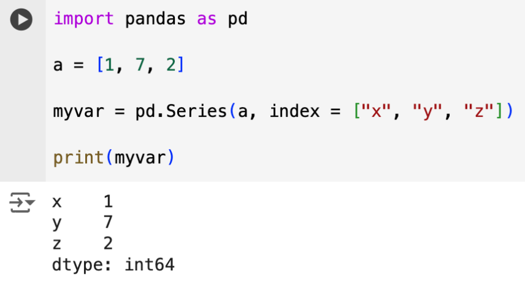
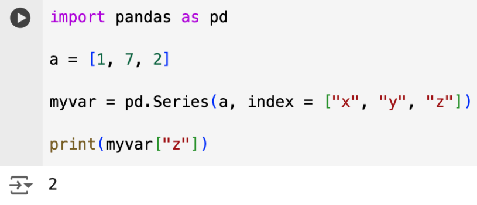
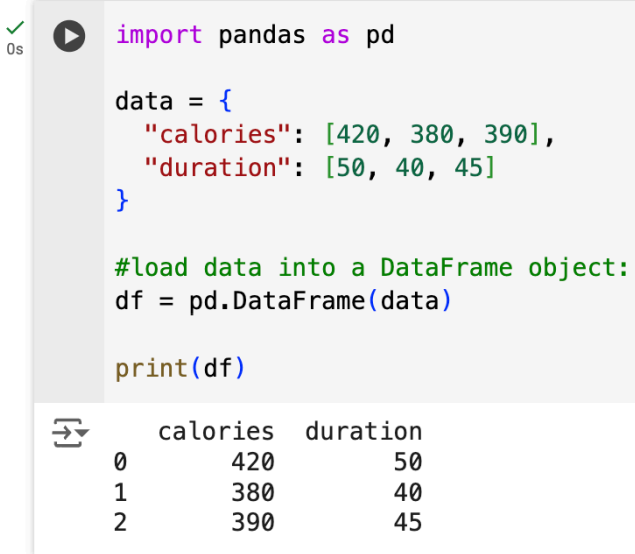
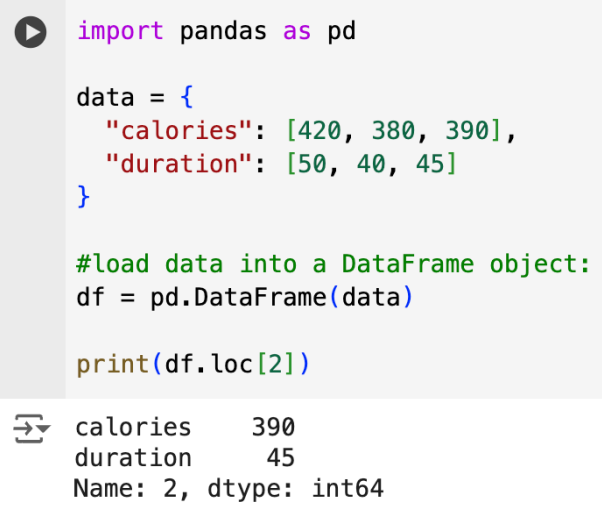
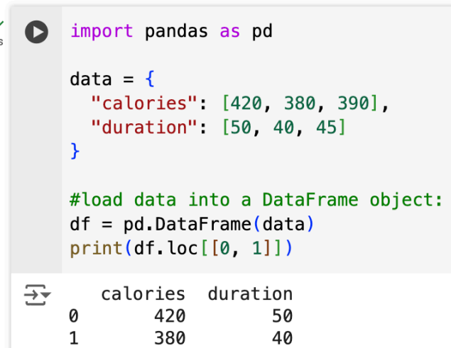
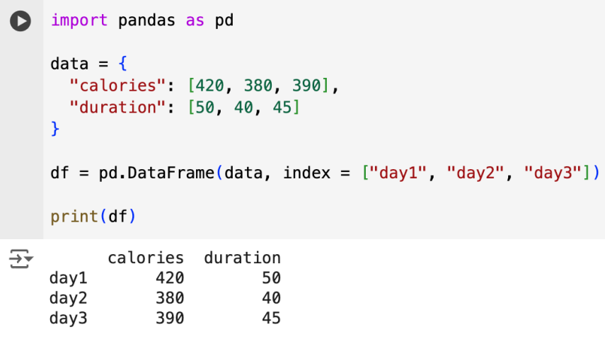

• Pandas merupakan sebuah library yang menggunakan Bahasa Python yang biasa digunakan untuk mengolah data
• Library ini mempunyai fungsi built-in yang bisa digunakan untuk menganlisis,mengeksplorasi, membersihkan, dan memanipulasi data.
• Pandas sangat cocok digunakan untuk mengolah big data.
Sebelum bisa menggunakan Pandas, kita wajib untuk melakukan import terlebih dahulu. Pada contoh di bawah ini dapat dilihat bagaimana cara melakukan import pandas dan membuatkan alias sehingga lebih singkat ketika digunakan.
• Series merupakan array satu dimensi pada Pandas yang bisa digunakan untuk menyimpan data dengan berbagai tipe.
• Series dianalogikan sebagai sebuah kolom pada sebuah tabel
Jika pada array index pertama ada adalah 0, maka pada series kita bisa memberikan nama/label sendiri pada index sebuah series. Berikut contohnya.
Ketika kita membuat labels, maka kita bisa memanggil item yang ada pada series dengan menggunakan labels yang sudah dibuat.
Jika Series pada Pandas diibaratkan sebagai sebuah kolom, maka DataFrames diibaratkan sebagai sebuah tabel utuh.
Fungsi ini digunakan untuk mengambil nilai sebuah baris pada sebuah DataFrame.
Fungsi ini juga bisa digunakan untuk mengambil nilai baris dengan jumlah lebih dari 1.
Fungsi ini dapat digunakan untuk memberikan nama untuk masing-masing baris pada sebuah DataFrame.
